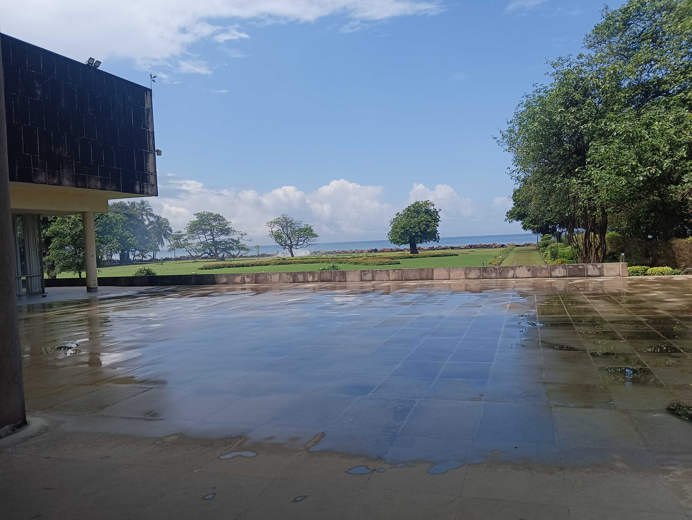

Harsh Mehta
Research Scholar, Tata Institute of Fundamental Research (TIFR), Mumbai

Research Scholar, Tata Institute of Fundamental Research (TIFR), Mumbai

I am interested in a variety of topics in the field of Astrophysics and Cosmology. My current research mostly focuses on probing Fundamental Physics using the Cosmic Microwave Background (CMB) at small scales. The CMB is a nearly uniform relic radiation originating from the Big Bang, following a Planck Black-body spectrum. Not only is the CMB used to study Early-Universe Physics, but its observed properties today are further shaped by interactions between CMB photons and large-scale structure along their path to us. It shows temperature variations at the level of one part in 10⁵ and can be used to test any modifications in the Standard Model of Cosmology and Particle physics.
The CMB can be used to detect hypothetical particles such as axions or axion-like particles (ALPs), one of the dark matter candidates predicted by various Beyond Standard Model (BSM) theories. If ALPs exist in nature, CMB photons can convert into ALPs, leaving imprints through polarization and spectral distortions. I study how these signals arise in galaxy clusters and the Milky Way.


Recent JWST observations of massive galaxies at early times of reionization have challenged our undertanding of the astrophysics and/or cosmology. I study the physics of cosmic reionization, which marks the time during which the galaxies came into being. Secondary anisotropies, arising from effects such as gravitational lensing of CMB photons, and scattering by ionized gas via the kinematic Sunyaev Zeldovich (kSZ) effect, provide a powerful probe of this epoch of the Universe. Through these signals, the CMB becomes a sensitive tracer of structure formation, baryonic physics, and the evolution of matter on cosmological scales.
I am a part of the following Collaborations:
My list of Publications: